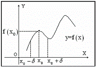
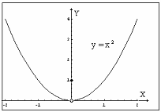

18.1.2. Локальный экстремум функции
Пусть функция  определена в
некоторой окрестности точки
определена в
некоторой окрестности точки  , включая и саму
точку . Точка называется
точкой локального максимума (минимума) функции ,
если существует такое , что для всех
, включая и саму
точку . Точка называется
точкой локального максимума (минимума) функции ,
если существует такое , что для всех  из интервала
из интервала  верно
неравенство:
верно
неравенство:
определена в
некоторой окрестности точки , включая и саму
точку . Точка называется
точкой локального максимума (минимума) функции ,
если существует такое , что для всех из интервала верно
неравенство: ().

Значение функции в точке максимума
называется локальным максимумом, а значение функции в точке минимума -
локальным минимумом данной функции.
в точке максимума
называется локальным максимумом, а значение функции в точке минимума -
локальным минимумом данной функции.Локальные максимум и минимум называются локальными
экстремумами.
Эти определения означают, что -
локальный максимум функции , если существует
такой интервал , в котором является наибольшим значением
функции , и -
локальный минимум функции , если существует
интервал , в котором является
наименьшим значением функции на этом интервале.
, если существует
такой интервал , в котором является наибольшим значением
функции , и -
локальный минимум функции , если существует
интервал , в котором является
наименьшим значением функции на этом интервале.Термин локальный (местный) обусловлен тем, что введенное
понятие экстремума связано с окрестностью данной точки в области определения
функции, а не со всей этой областью. В дальнейшем слово «локальный» будем для
краткости опускать. Мы будем рассматривать лишь точки строгого максимума и
минимума.
Точка называется точкой
строгого максимума (минимума) функции ,
если существует такое, что для всех , удовлетворяющих условию , верно строгое неравенство (соответственно ). В приведенном определении не
предполагается непрерывности функции в точке .
называется точкой
строгого максимума (минимума) функции ,
если существует такое, что для всех , удовлетворяющих условию , верно строгое неравенство (соответственно ). В приведенном определении не
предполагается непрерывности функции в точке . В точке  - максимум, хотя в ней нет
непрерывности функции.
- максимум, хотя в ней нет
непрерывности функции.
- максимум, хотя в ней нет
непрерывности функции.